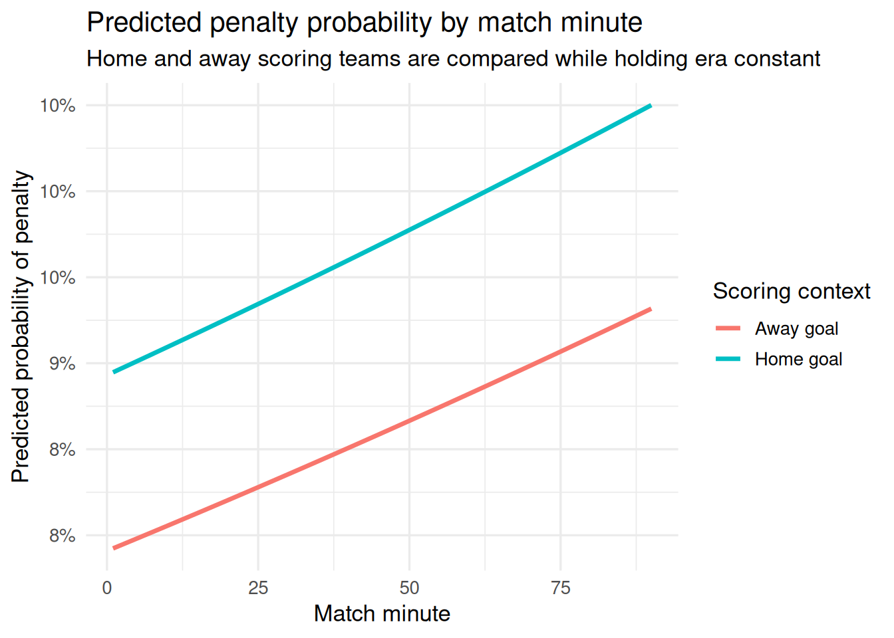

| Variable | Estimate | Std. Error | z value | p value | Odds Ratio | CI lower | CI upper |
|---|---|---|---|---|---|---|---|
| Intercept | -2.455 | 0.431 | -5.69 | 0.000 | 0.086 | 0.037 | 0.200 |
| Home score | 0.133 | 0.038 | 3.53 | 0.000 | 1.142 | 1.061 | 1.229 |
| Goal minute | 0.002 | 0.001 | 2.88 | 0.004 | 1.002 | 1.001 | 1.003 |
| era1920 | -0.959 | 0.492 | -1.95 | 0.051 | 0.383 | 0.146 | 1.005 |
| era1930 | -0.918 | 0.473 | -1.94 | 0.053 | 0.399 | 0.158 | 1.010 |
| era1940 | -1.122 | 0.485 | -2.31 | 0.021 | 0.326 | 0.126 | 0.844 |
| era1950 | -0.724 | 0.447 | -1.62 | 0.105 | 0.485 | 0.202 | 1.164 |
| era1960 | -0.870 | 0.441 | -1.97 | 0.048 | 0.419 | 0.177 | 0.993 |
| era1970 | -0.389 | 0.436 | -0.89 | 0.372 | 0.678 | 0.289 | 1.592 |
| era1980 | -0.474 | 0.435 | -1.09 | 0.276 | 0.623 | 0.266 | 1.459 |
| era1990 | -0.427 | 0.432 | -0.99 | 0.323 | 0.653 | 0.280 | 1.522 |
| era2000 | -0.472 | 0.431 | -1.10 | 0.273 | 0.624 | 0.268 | 1.452 |
| era2010 | -0.137 | 0.431 | -0.32 | 0.750 | 0.872 | 0.375 | 2.028 |
| era2020 | 0.040 | 0.431 | 0.09 | 0.926 | 1.041 | 0.447 | 2.421 |
Model
A published-style regression report with a defined outcome, treatment, and covariates
This model page is designed to look and feel like a formal analytical report. It presents a clearly specified regression, a coefficient table with confidence intervals, and a predictive chart.
Model specification
The outcome and predictors are defined as follows:
- Outcome:
is_penalty, indicating whether a goal was a penalty. - Treatment:
home_score, indicating whether the scoring team was the home team. - Covariates:
minute, anderafromdecade.
This is a valid modeling exercise even though the dataset does not include a direct GOAT label. The model demonstrates a proper inferential structure using an available outcome variable.
\[ \text{logit}(P(\text{Penalty}=1)) = \beta_0 + \beta_1 \times \text{HomeScore} + \beta_2 \times \text{Minute} + \sum_{k} \gamma_k \times \text{Era}_k + \varepsilon \]
The table above is the core output of the model. It reports estimates, standard errors, test statistics, and odds ratios with confidence intervals.
Treatment effect interpretation
The coefficient on Home score is the treatment effect of interest. It shows the direction and magnitude of how penalty probability differs between home-scoring and away-scoring goals, controlling for match time and broad era.
# A tibble: 1 × 5
term estimate odds_ratio conf_int p_value
<chr> <dbl> <dbl> <chr> <dbl>
1 Home score 0.133 1.14 [1.061, 1.229] 0.000422A statistically significant positive coefficient would imply that home-scoring goals have a higher modeled probability of being penalties than away-scoring goals, holding the included covariates constant.
Predicted probability by match minute
The chart below shows predicted penalty probability across match minutes for home and away scoring teams. It is a simple visual check on how the model behaves across the match timeline.

Limitations
This model is not a GOAT predictor. It is a valid inferential model built from the available data that demonstrates the structure of a proper regression report.
The strongest limitation is that the dataset contains only goals. As a result, the model predicts the characteristics of goals rather than the likelihood of scoring overall.
Speaker notes
- This page is intended to show a proper model structure, not to solve the GOAT question.
- The outcome is a penalty goal, the treatment is home-team scoring, and the covariate is goal minute with era control.
- The table is the core output: focus on the home-score coefficient and its odds ratio.
- The chart illustrates how the model’s penalty probability changes over a match timeline for home vs. away scoring teams.